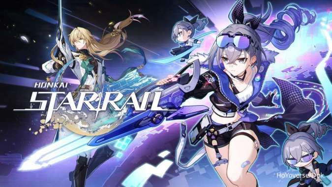

1. Genshin Impact

Genshin Impact adalah permainan yang bergenre dunia terbuka (open world) sekaligus bermain peran aksi. Pada permainan ini, pemain memungkinkan untuk mengendalikan salah satu karakter yang dapat digantikan di dalam sebuah party (kelompok). Karakter-karakter yang ditukarkan dapat dilakukan dengan cepat selama melakukan kombat sehingga memungkinkan pemain untuk menggunakan kombinasi kemampuan dan serangan yang berbeda.[6] Karakter yang dapat memiliki kemampuan diperkuat dengan berbagai cara, seperti menaikkan level-nya secara langsung dan memperkuat artefak beserta senjata yang dapat digunakan oleh seorang karakter.
Pemain dapat mengendalikan karakter mereka dan melakukan aksi seperti berlari, memanjat, berenang, dan berseluncur; semua aksi tersebut dibatasi dengan stamina. Beberapa karakter juga memiliki kemampuan mengubah lingkungan, seperti membuat jalanan es dengan membekukan air untuk membantu pemain melintasi tempat-tempat lain.
2. Arknight
Permainan ini merupakan pertahanan menara yang menggunakan sejumlah karakter (yang disebut "operator") sebagai struktur pertahanannya. Operator jarak dekat (melee) ditempatkan di atas lantai (ubin) dasar, sementara operator jarak jauh (ranged) di atas lantai yang ditinggikan. Operator jarak dekat secara fisik menghentikan pergerakan musuh untuk bergerak maju, sementara operator jarak jauh bertugas untuk memulihkan, menunjang para operator jarak dekat, atau juga menangani kerusakan jarak jauh.
Pemain harus menempatkan operator di atas lantai yang benar untuk mencegah musuh menyusup markas pemain. Setelah ditempatkan, keterampilan (skill) operator dapat diaktifkan setelah beberapa waktu untuk efek khusus atau mereka (operator) dapat ditarik untuk penempatan kembali setelah durasi penundaan habis.
3. Honkai Star Rail

Game Honkai: Star Rail rilis pada 26 April 2023.Game ini bisa dimainkan di PC, iOS dan Android.Genre dari game ini yaitu role playing game khas Jepang alias JRPG. Game ini berjenis JRPG dan menggunakan sistem battle dengan mekanisme permainan turn-based. Sehingga player bisa punya banyak waktu untuk mengatur strategi menyerang demi membasmi musuh-musuh yang menghadang. Dalam game ini player memungkinkan untuk menelusuri dunia luar angkasa yang cukup luas. (1)
Game Honkai: Star Rail bertema open world. Di dalam game ini pemain (player) memungkinkan untuk menjelajahi dunia open world menggunakan sebuah karakter.
4. Punishing Gray Raven

Punishing: Gray Raven meminta pemain mengendalikan pasukan hingga tiga karakter, yang dikenal sebagai "Constructs", melawan berbagai musuh. Pengisahan cerita disajikan dalam format visual novel, sedangkan pertarungan berbasis aksi hack and smash, dengan pemain melawan musuh secara real-time dalam berbagai tahapan. Selama pertempuran, "Ping" dengan warna berbeda dapat diperoleh, yang akan menembakkan keterampilan berbeda.